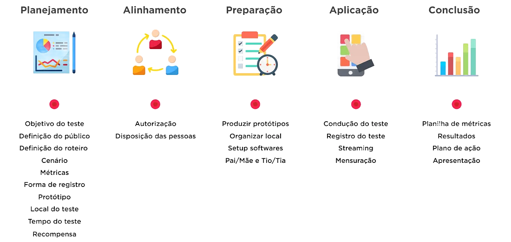

O que é o Inspecável?
O Inspecável é uma ferramenta para realizar inspeções de usabilidade de maneira colaborativa e online, integrando inspetores e monitores em uma plataforma que auxilia em cada etapa, da criação à exportação de uma inspeção, através de um pipeline definido e personalizável, garantindo a estrutura adequada durante todas as etapas da inspeção.
Além disso, com foco no aprendizando contínuo e buscando facilitar a compreensão de todo o processo de inspeção, qualquer usuário pode personalizar as regras, criar, inspecionar ou monitorar uma inspeção de maneira simples e direta.
A seguir serão apresentadas as características do sistema, como casos de uso e aplicações. Para orientações práticas sobre como utilizar a ferramenta, acompanhe o guia de uso.
O que é uma Inspeção de Usabilidade?

A Inspeção de Usabilidade é um método de avaliação utilizado para identificar problemas na experiência do usuário de um sistema, site, aplicativo ou qualquer artefato de software.
Porém, diferente dos testes com usuários reais, essa abordagem é realizada por especialistas ou avaliadores que analisam a interface com base em diretrizes, heurísticas ou critérios específicos de usabilidade.
O objetivo principal é encontrar barreiras que dificultem a interação dos usuários, como interfaces confusas, fluxos pouco intuitivos ou elementos que não seguem boas práticas de design.
A partir disso, as equipes de desenvolvimento podem realizar ajustes antes do lançamento ou durante o ciclo de melhorias contínuas.
Porque Usar o Inspecável?
Embora a inspeção de usabilidade seja uma forma eficaz de melhoria contínua, ela raramente é aplicada fora de ambientes bem estruturados.
Isso acontece porque, além dos desafios comuns dos testes de software (como protocolos rígidos, repetições e cenários limitados), esse tipo de inspeção exige um trabalho em equipe bem organizado. Durante o processo, os inspetores avaliam o sistema, enquanto o monitor supervisiona sem interferir diretamente, para evitar viés.
Essa separação muitas vezes leva a inconsistências e discrepâncias que comprometem os resultados da inspeção e, por consequência, inviabilizam a execução desse método.
E é aí que entra o inspecável!
O sistema possibilita que você defina as normas e realize todas as etapas da inspeção na mesma ferramenta e de maneira simples, evitando que tanto inspetores como o monitor se desviem das normas no processo.
Como o Sistema me Ajudaria?
O processo de inspeção, ainda que seja versátil em sua execução, tem um fluxo de etapas definido e sequencial: planejamento, detecção, coleção e discriminação, etapas essas que podem ser realizadas na íntegra através do sistema, garantindo a estrutura do processo.

No entanto, um processo rígido não seria útil para casos de teste em um ambiente real, então tomamos algumas providências para aumentar essa flexibilidade.
Para começar, o sistema é de código aberto e foi desenvolvido com Django visando a facilidade de modificação e este site que você está acompanhando traz a documentação completa do sistema (tanto a técnica quanto a informal) para facilitar o uso e a modificação.
Nem todos têm os recursos ou a necessidade de adaptar o sistema, e nem precisam. Sem alterar o fluxo do processo e priorizando a simplicidade, nós buscamos oferecer o máximo de flexibilidade, que inclui a personalização de tipos de artefatos e parâmetros de inspeção, mas ainda há muito o que melhorar.
Sinta-se livre para utilizar a ferramenta como quiser e se tiver alguma sujestão (ou, quem sabe, realizado uma inspeção de usabilidade na própria ferramenta), comunique os desenvolvedores. Também estamos comprometidos com a melhoria contínua.
Sobre o Sistema
Agora que você sabe o porque, vamos entender como o sistema lida com alguns aspectos do processo de inspeção.
Delegação de Responsabilidades

O primeiro passo ao organizar um trabalho deve ser definir os cargos, o que o sistema faz, mas só quando necessário.
Para permitir uma maior liberdade aos usuários e simplificar o uso da ferramenta, seu papel como inspetor ou monitor na plataforma não é restrito. Isso quer dizer que: ao criar uma inspeção A o usuário se torna o monitor da inspecao A; ao ser atribuído a uma inspeção B ele se torna monitor da inspeção B. Simples assim.
Etapas da Inspeção

Todas as etapas de uma inspeção são sequenciais e devem ser concluídas antes de dar inicio à próxima. A navegação do site foi pensada para refletir isso.
O mesmo método de acesso é usado para todas as etapas, onde o sistema determina o contexto e redireciona adequadamente. Além disso, não é possível retroceder ou avançar etapas.
Formatação Personalizada

As regras de negócio em cada organização são diferentes, por isso, embora a ferramenta já venha com os padrões da inspeção de usabilidade cadastrados em um Artefato, seu uso é completamente opcional.
Qualquer usuário pode cadastrar padrões e utilizar qualquer um dos padrões cadastrados na ferramenta, favorecendo a adaptação, comunicação e o reuso.
Escopo Restrito

A ferramenta é, antes de tudo, simples. Oferece suporte a toda a inspeção, mas apenas isso, e vai continuar assim.
E isso é algo possitivo pois além de manter sua modularidade, facilitando que ela seja integrada em demais sistemas ou como partes de outros processos, também diminui o trabalho de um usuário final que deseje apenas realizar uma inspeção de usabilidade.
Porque a Estilização do Site é Crua?

A razão primária para isso é a equipe de desenvolvimento reduzida, em que a priorização do escopo foi na funcionalidade, não na estilização. Porém, um dos fatores que mais contribuiu para essa priorização foi o reuso.
Para adaptar um sistema em um novo contexto é necessário antes de tudo compreender seu funcionamento. Nesse sentido a estilização seria mais um empecilho que, embora útil, não interfere diretamente nas operações do sistema.
Esperamos que a explicação tenha sido esclarecedora!
Para entender as questões técnicas do projeto, acompanhe a seção de documentação técnica.
Para acompanhar a auditoria realizada no sistema, acompanhe a seção de testes.
Para sanar qualquer dúvida remanescente, contate a equipe de desenvolvimento.